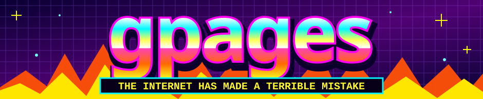

★ WELCOME TO THE WORLD WIDE WEB ★BEST VIEWED AT 800×600 ON A CRT MONITOR

~*~ WELCOME, CYBER TRAVELER! ~*~ YOU HAVE REACHED THE VERY EDGE OF GOOD TASTE ~*~
*** HOT!!! *** 7 GLORIOUS INTERNET THINGIES *** FREE PIXELS INSIDE *** SITE UNDER CONSTRUCTION SINCE FIVE MINUTES AGO *** CLICK THE THINGS!!! *** HOT!!! ***
★ MY AWESOME HOME PAGE!!! ★
YES, THIS IS A REAL WEBSITE. YES, THE LINKS WORK. NO, A RESPONSIBLE ADULT DID NOT APPROVE THE DESIGN.
↓↓↓ CHOOSE YOUR DESTINATION ↓↓↓
NOTE FROM THE WEBMASTER: Behind this visual disaster are the same working tools as before. Absolutely no useful features were sacrificed to the graphics gods.